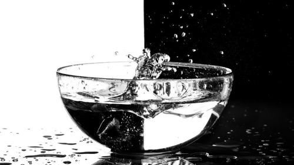
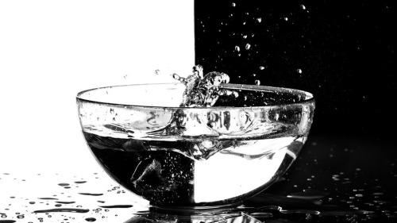
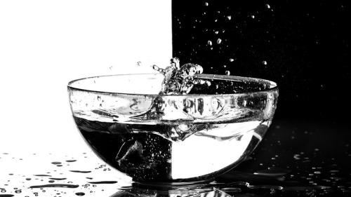
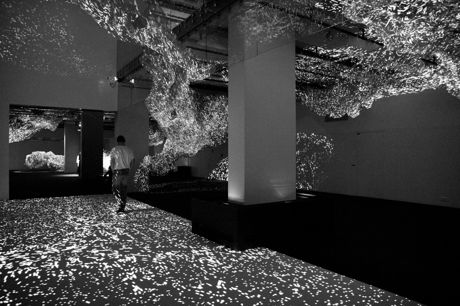

Interaction sons-formes-usagers
L’interaction entre sons-formes peut être rendue visible à l’aide de logiciels comme Audacity ou Photosounder, un son a la possibilité de faire image, et inversement. Ces outils numériques permettent une conversion logique entre la lecture de contenu visuel et audio, et illustrent les relations entre les sens de la vue et de l’ouïe. En extrayant l’histogramme des couleurs d’une image à l’aide d’un logiciel de traitement de d’image comme Photoshop, on obtient un graphique avec différentes couleurs, qui, en le plaçant dans Audacity, peut être lu en temps que spectre sonore. Avec Photosounder1 , la manipulation est plus simple, l’image, une fois glissée dans le logiciel, est convertie directement en spectre audio puis peut être lue. L’interaction sons-formes est influencée par l’usager, ses actions peuvent modifier cette relation audio-visuelle. À l’aide de logiciels OpenSources comme Processing2
, la manipulation est plus simple, l’image, une fois glissée dans le logiciel, est convertie directement en spectre audio puis peut être lue. L’interaction sons-formes est influencée par l’usager, ses actions peuvent modifier cette relation audio-visuelle. À l’aide de logiciels OpenSources comme Processing2 et PureData, il est facile de programmer et faire dialoguer l’usager pour ainsi générer des images et/ou des sons complémentaires. En effet, Processing permet d’écrire des petits scripts en JavaScript et de les exécuter. On peut facilement faire générer des formes (aléatoires ou non), dont, par exemple, les directions seront influencées par les mouvements de la souris, ou encore dont les couleurs varieront en fonction des touches du clavier qui sont manipulées. Pour aller encore plus loin, il est possible de lire une image3 en nuances de gris et de faire correspondre chaque nuance à une fréquence sonore. L’image visuelle devient un paysage sonore et est lue à la vitesse choisie par l’utilisateur.
et PureData, il est facile de programmer et faire dialoguer l’usager pour ainsi générer des images et/ou des sons complémentaires. En effet, Processing permet d’écrire des petits scripts en JavaScript et de les exécuter. On peut facilement faire générer des formes (aléatoires ou non), dont, par exemple, les directions seront influencées par les mouvements de la souris, ou encore dont les couleurs varieront en fonction des touches du clavier qui sont manipulées. Pour aller encore plus loin, il est possible de lire une image3 en nuances de gris et de faire correspondre chaque nuance à une fréquence sonore. L’image visuelle devient un paysage sonore et est lue à la vitesse choisie par l’utilisateur.
, la manipulation est plus simple, l’image, une fois glissée dans le logiciel, est convertie directement en spectre audio puis peut être lue. L’interaction sons-formes est influencée par l’usager, ses actions peuvent modifier cette relation audio-visuelle. À l’aide de logiciels OpenSources comme Processing2 et PureData, il est facile de programmer et faire dialoguer l’usager pour ainsi générer des images et/ou des sons complémentaires. En effet, Processing permet d’écrire des petits scripts en JavaScript et de les exécuter. On peut facilement faire générer des formes (aléatoires ou non), dont, par exemple, les directions seront influencées par les mouvements de la souris, ou encore dont les couleurs varieront en fonction des touches du clavier qui sont manipulées. Pour aller encore plus loin, il est possible de lire une image3 en nuances de gris et de faire correspondre chaque nuance à une fréquence sonore. L’image visuelle devient un paysage sonore et est lue à la vitesse choisie par l’utilisateur.Dans notre ère, de plus en plus numérique, la place de l’usager a changé, jusqu’à devenir un facteur essentiel de la relation sons-formes.
4.Faire Corps Marina M & Adrian B
Exposition/expérience immersive et interactive, La Gaitée Lyrique, 2019
Exposition/expérience immersive et interactive, La Gaitée Lyrique, 2019
1.Photosounder
Éxperimentation_de photo à son
Éxperimentation_de photo à son
2.Processing
Éxperimentation_interaction avec les mouvements de l'usager
Éxperimentation_interaction avec les mouvements de l'usager
3.Processing
Éxperimentation_de photo à son
Éxperimentation_de photo à son
Contemplation participative
Les interactions entre sons, formes et usagers sont aussi en lien avec l’environnement dans lequel se trouve cet usager. Le parallèle entre l’espace autour de l’usager et l’espace interne au numérique, quand on parle de bricolage numérique, est tout à fait faisable. Il s’agit de deux environnements exploitables, dans lesquels les modifications apportées viendront les transformer en eux-mêmes. Après mes premières expérimentations de logiciels, je m’appuie sur l’analyse de Faire Corps4 à la Gaîté Lyrique, cette exposition/expérience est composée d’un ensemble d’installations immersives et interactives. Mélangeant des techniques numériques et traditionnelles, elle explore un territoire imaginaire composé de paradoxes mathématiques et d’illusions typographiques. Un environnement à la nature revisité par le numérique est créé, ce qui pousse le public à intervenir et à le modifier, le faire évoluer, on peut donc parler de contemplation participative. Celle-ci est illustrée par un jeu de parcours dans un espace en mouvement, presque onirique, justifié par une grande inspiration de la nature. L’utilisation de matières visuelles et sonores numériques vibrantes, éphémères, mobiles, génératives et envoûtantes permet une appropriation des lieux de la part du spectateur qui devient acteur, et ainsi s’inclue dans une réelle expérience numérique sensorielle.
Cette prise en compte de l’usager permet de passer d’une simple interaction visuelle et sonore à un expérience quasi-total.